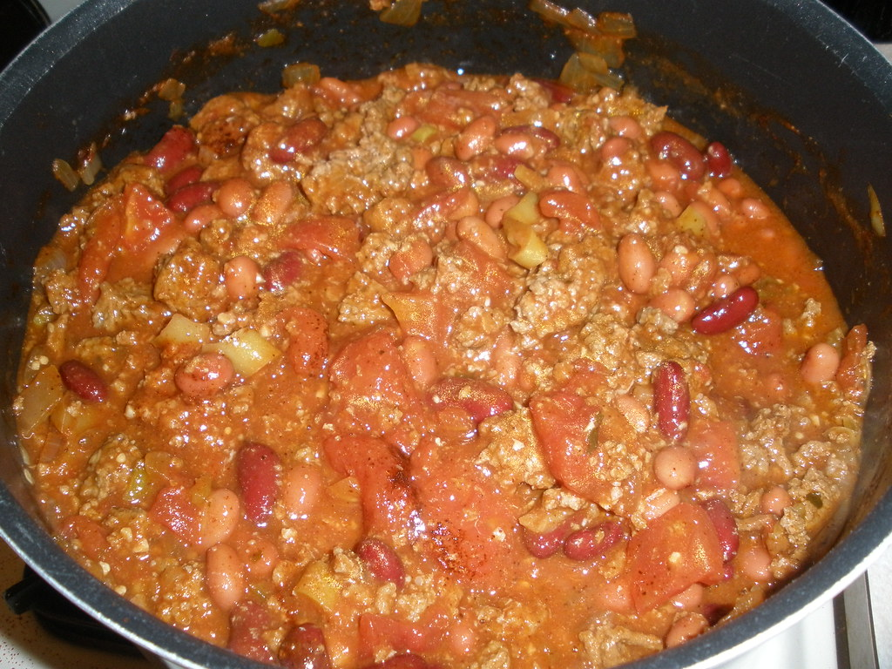

Return to Home Page
Description
This cozy turkey chili is a super simple, big-batch classic perfect for the colder months.
Mildly seasoned and not too spicy, it leans on everyday pantry ingredients and straightforward steps.
Nothing fancy. It may not win any chili cook-offs, but it reliably delivers hearty, crowd-pleasing comfort in every bowl.
Great for meal prep, leftovers, or feeding a hungry group with minimal effort.
Ingredients List
- 3-4lbs of 85% lean turkey
- 2 15oz cans of red kidney beans
- 2 cans of rotel
- 2 cans of corn
- 4-8oz of spicy chicken broth (as needed for consistency)
- 1 large diced white onion
- 3 cloves minced garlic
- Chili Powder
- Cumin
- Smoked Paprika
- Salt
- Pepper
- One jars of your choice of salsa
- Shredded Cheese
- Olive Oil
Steps
Brown and Season Meat
- Preheat a large skillet over medium-high heat.
- Mix together all seasonings generously and to taste.
- Coat skillet with oil.
- Add ground turkey and brown for 4-5 minutes
- Add about half of your seasoning and cook until evenly brown. Drain.
Combine into the Crock Pot
- Drain and rinse the corn and beans. Add to the pot.
- Add rotel, onion, garlic, and salsa to pot.
- Add turkey meat and the rest of the seasoning.
- Set crock pot to low for 4 hours.
- Serve and top with cheese.